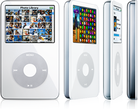

You should get into iPods.

Old forms of technology are generally considered obsolete and in some cases just unusable. This way of thinking is actually wrong and will only lead to you buying expensive e-waste to replace your current phone, music-player or any other form of technology. iPods are one of these products that are actually still fully supported on Windows and MacOS!
iPods and iTunes
iTunes is the way of transferring music to your iPod. While not necessary for the installation of music onto your iPod, it's a primary way of buying and installing music onto it. If you have CDs, it will even convert it to a playable version onto your iPod!
Pricey-pricey
While iPods used to be outrageous in pricing, the prices have come down substantially since they were introduced. A good priced iPod can be from 30$ all the way to 100$. The price is heavily dependant on what model you would like. A 4th generation monochrome iPod is more in the 30-40$ range and a 5th-7th gen color video screen all the way up in the 100$ range.

Moddable!
One thing that Apple has been well-known for in their product range is the absolute locking down of their hardware and lack of fixablity on the consumer end. But back in the day, Apple had absolutely amazing hardware fixability, every iPod classic can be fixed by the consumer fairly easily. Beyond that, modifying the iPod's capacity, screen, case, controls and other parts can totally be done and is entirely feasible for the average consumer! Do you want Spotify on your iPod? You can do it. Do you want 4TB of storage on your iPod? You can do it. Do you want BlueTooth on your iPod? Absolutely do-able.
In conclusion, while indeed quite an old series of devices, iPods are a perfect way of listening to music while keeping to a budget, especially if you have a massive range of CDs on you.
Last edited: 18-09-23